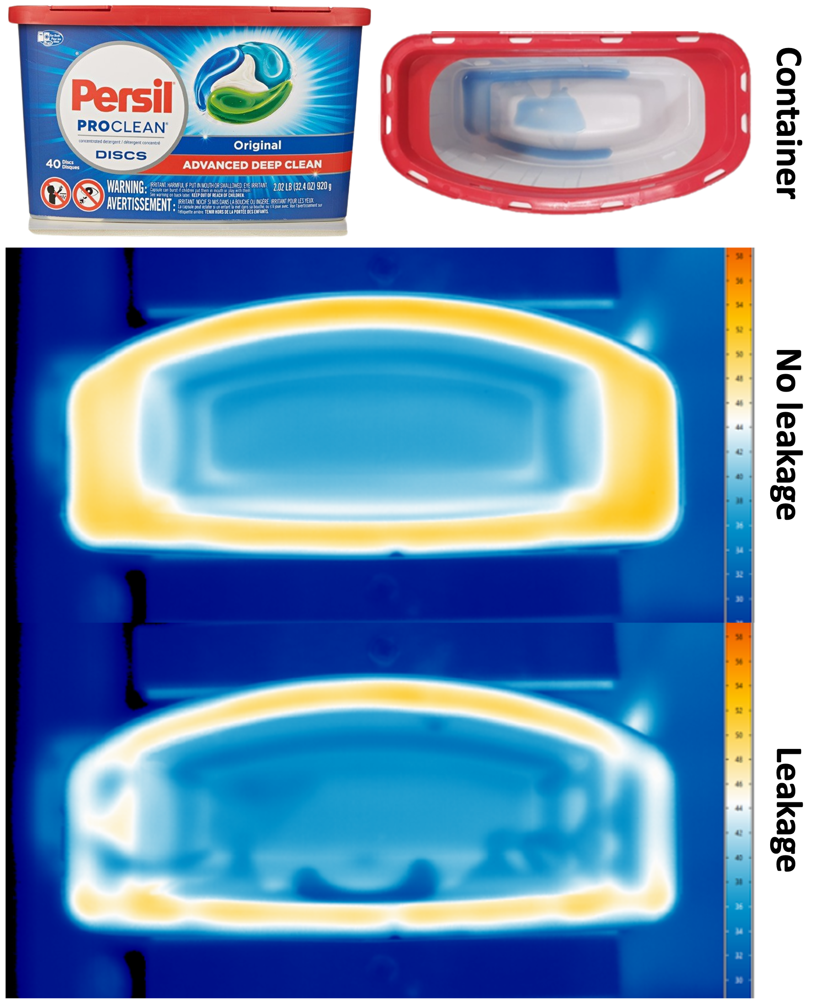

|
Rick Akkerman I am a research intern at the Max Planck Institute for Intelligent Systems (MPI-IS) in Tübingen, advised by Dimitris Tzionas, Victoria Fernández Abrevaya and Haiwen Feng. At Google I've worked on Glass, Lens Blur, HDR+, VR, Portrait Mode, Portrait Light, and Maps. I did my PhD at UC Berkeley, where I was advised by Jitendra Malik. I've received the PAMI Young Researcher Award. |

|
ResearchI'm interested in computer vision, deep learning, generative AI, and image processing. Most of my research is about inferring the physical world (shape, motion, color, light, etc) from images, usually with radiance fields. |
|
|
[Re] Explaining in Style: Training a GAN to explain a classifier in StyleSpace
Noah van der Vleuten, Tadija Radusinović, Rick Akkerman, Meilina Reksoprodjo Rescience C, 2022 Publication | Code | NeurIPS Poster By incorporating a classifier into StyleGAN’s training process, StylEx develops a classifier-specific StyleSpace. Within this space we can find disentangled attributes that can be used to generate counterfactual images that flip the classifier’s decision. |
Projects |
|

|
Leakage detection in sealed laundry pod containers using thermal imaging
Rick Akkerman, Niels Beukers, Niels Koerssen, Akash Ravi Prame Rescience C, 2022 Publication | Code | NeurIPS Poster After coming off the production line, some laundry pods start leaking on the bottom of an already sealed container, calling for non-destructive quality inspection. The plastic of the container conducts heat faster to the liquid than to air, which means we can measure a thermal difference between clean and leaked-on areas when heated. Using a cobot, ceramic heater and a high-end thermal camera, we collect a dataset of consistent, uniformly heated and high quality thermal images. Using this dataset, we train an image classification system using ResNet and achieve an accuracy of 92%. |